סוגי הקריסטלים
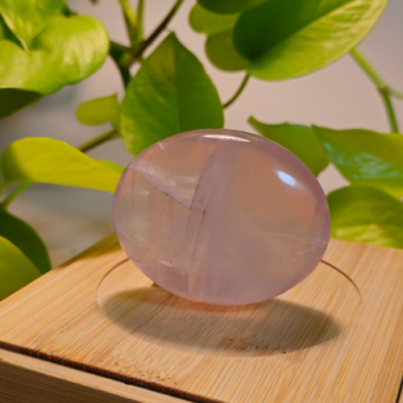
רוז קוורץ
מעודד אהבה עצמית, אהבת הזולת, ריפוי פצעים רגשיים והרמוניה ביחסים.
קשור ל: ספירת חסד וצ'אקרת הלב
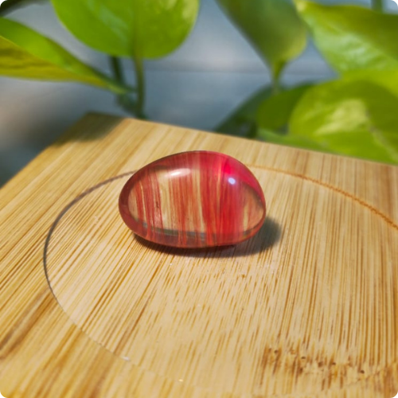
צרי קוורץ
מעודד אהבה, תשוקה, אנרגיה ויצירתיות. מסייע בביטחון עצמי, מוטיבציה ומימוש ייעוד. מחזק את האנרגיה החיובית ומביא אופטימיות.
קשור ל: ספירת גבורה וצ'אקרת הלב
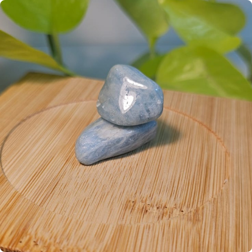
אקוומרין
מסייע בתקשורת, ביטוי עצמי, שלווה פנימית, חיבור לזרימת החיים.
קשור ל: ספירת חסד וצ'אקרת הגרון
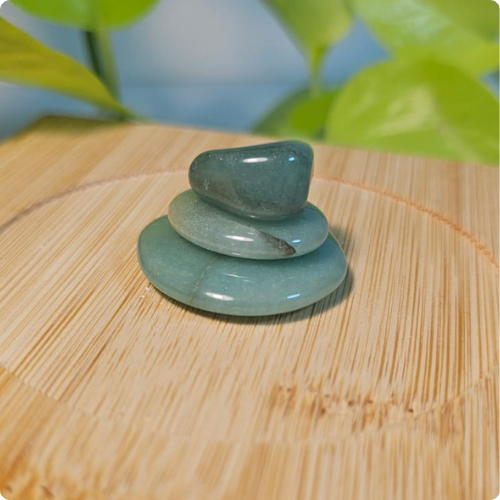
אוונטורין ירוק
מעודד צמיחה, שפע, מזל טוב, איזון רגשי וריפוי הלב.
קשור ל: ספירת נצח וצ'אקרת הלב
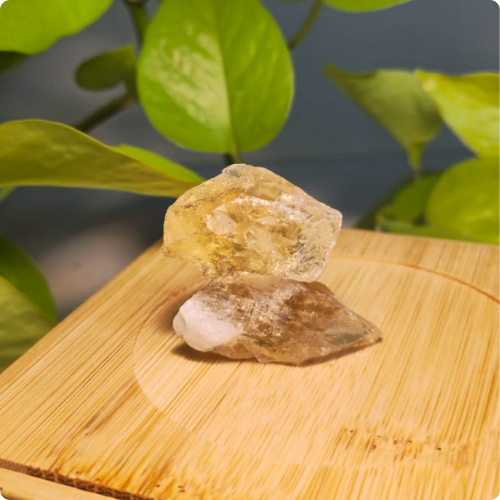
סיטרין
מושך שפע, ביטחון עצמי, אופטימיות ואנרגיה חיובית.
קשור ל: ספירת תפארת וצ'אקרת מקלעת השמש
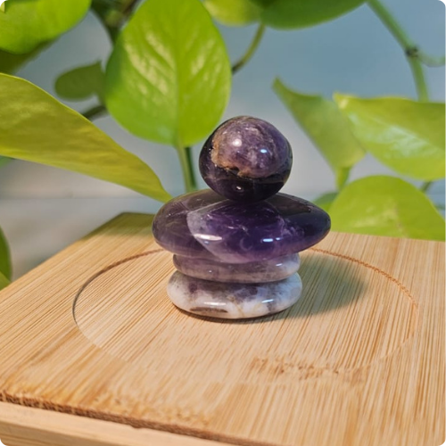
אמטיסט
מסייע ברגיעה, הפחתת חרדות, שיפור השינה, חיזוק האינטואיציה והקשר הרוחני.
קשור ל: ספירת כתר וצ'אקרת העין השלישית
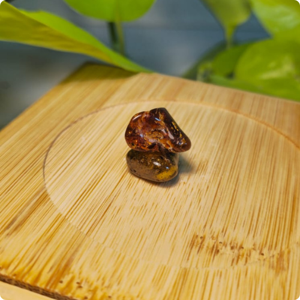
ענבר
מחזק אנרגיה, הגנה, ריפוי ובריאות. מסייע באיזון רגשי וחיבור לטבע.
קשור ל: ספירת תפארת וצ'אקרת מקלעת השמש
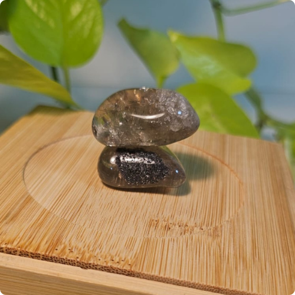
סמוקי קוורץ
מסייע באיזון, הגנה אנרגטית, שחרור רגשות שליליים וחיבור לטבע. מחזק את הצ'אקרה הבסיסית.
קשור ל: ספירת מלכות וצ'אקרת הבסיס
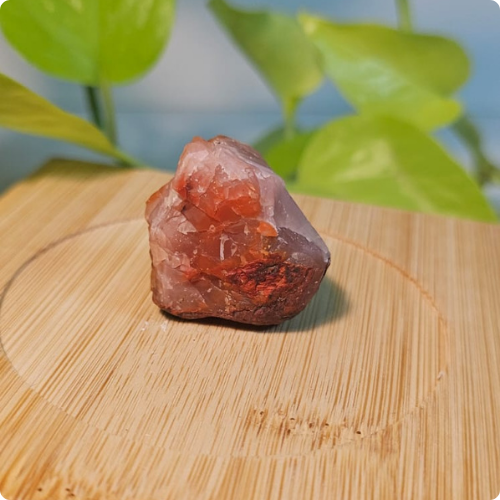
קרנליאן
מחזק אומץ, ביטחון עצמי, יצירתיות ואנרגיה. מסייע במוטיבציה ובמימוש ייעוד.
קשור ל: ספירת גבורה וצ'אקרת מקלעת השמש

אבן ירח
מסייע באיזון רגשי, אינטואיציה, חיבור לנשיות וטיפוח. מרגיע ומביא שלווה פנימית.
קשור ל: ספירת נצח וצ'אקרת הלב
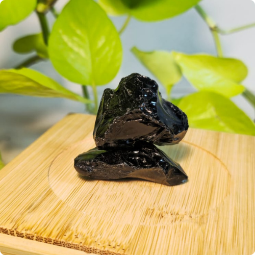
אופסידין
מגן מפני אנרגיות שליליות, מסייע בניקוי רגשי ופיזי. מחזק את הצ'אקרה הבסיסית.
קשור ל: ספירת מלכות וצ'אקרת הבסיס

טורמלין שחור
מגן חזק מפני אנרגיות שליליות, עומס רגשי וקרינה. מסייע באיזון אנרגטי.
קשור ל: ספירת מלכות וצ'אקרת הבסיס
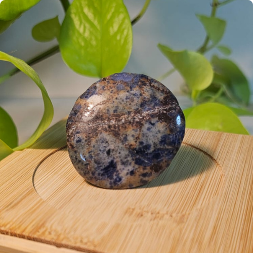
לאפיס לזולי
מחזק ביטוי עצמי, אמת, תקשורת ואמון. מסייע בחיבור לעצמי האמיתי ולחכמה פנימית.
קשור ל: ספירת בינה וצ'אקרת העין השלישית
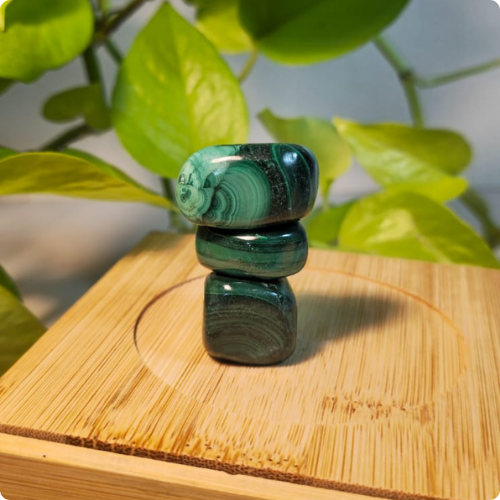
מלכיט
מסייע בפתיחת הלב, ריפוי רגשי, שינוי וצמיחה. מחזק את האומץ להתמודד עם אתגרים.
קשור ל: ספירת נצח וצ'אקרת הלב
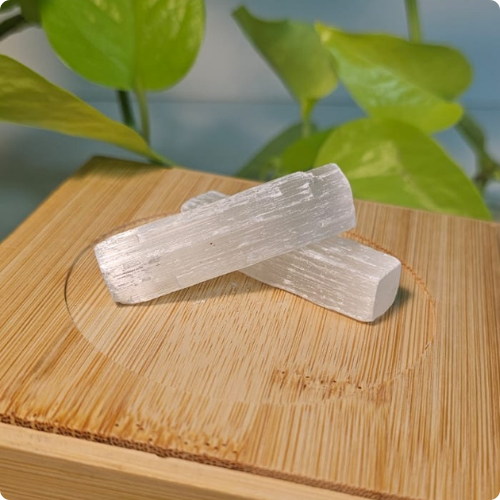
סלונייט
מנקה אנרגטית, מביא שקט פנימי, חיבור רוחני וחיזוק האינטואיציה. מסייע במיקוד.
קשור ל: ספירת כתר וצ'אקרת הכתר

עין הנמר
מחזק ביטחון עצמי, אומץ, הגנה ושפע. מסייע בהגנה מפני אנרגיות שליליות ומביא מזל.
קשור ל: ספירת תפארת וצ'אקרת מקלעת השמש

קוורץ שקוף
מגביר אנרגיה, מחזק את כל הצ'אקרות, מסייע בריפוי, מיקוד וחיבור למודעות גבוהה.
קשור ל: ספירת כתר וכל הצ'אקרות
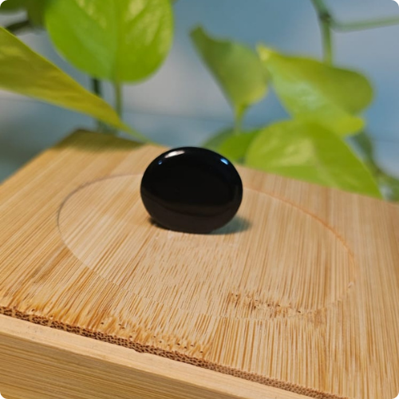
אוניקס שחור
מגן מפני אנרגיות שליליות, מחזק ריכוז, כוח רצון ועמידות. מסייע בהגנה אנרגטית.
קשור ל: ספירת מלכות וצ'אקרת הבסיס
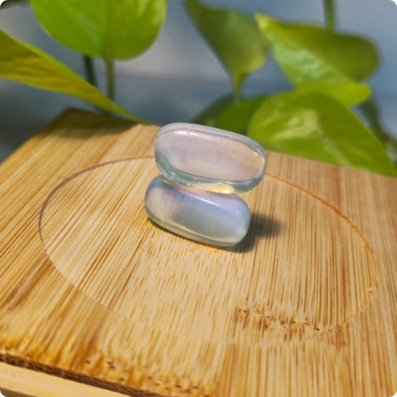
אופלית
מסייע בתקשורת, ביטוי עצמי, יצירתיות ופתיחות. מביא אור וצלילות מחשבתית.
קשור ל: ספירת חסד וצ'אקרת הגרון
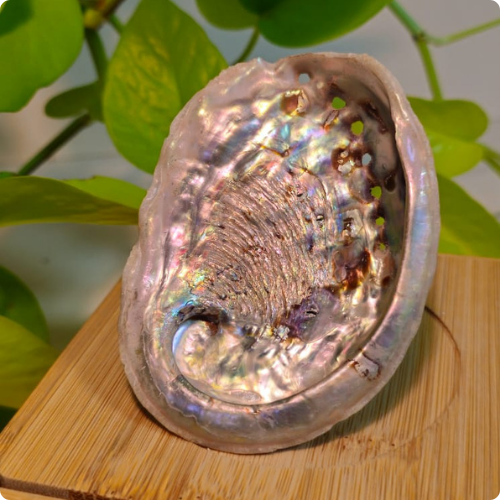
אבלון צדף
מסייע באיזון רגשי, ריפוי הלב, חיבור למים ולטבע. מביא שלווה, רגישות וחמלה.
קשור ל: ספירת חסד וצ'אקרת הלב